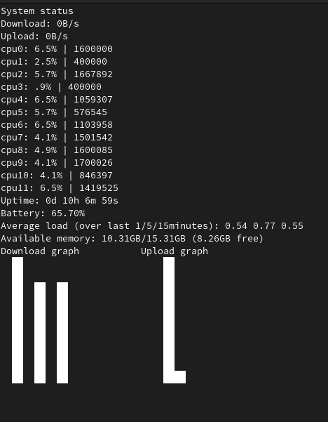

Device Status
Bash script showing current status of the device and netgraphs.
It shows the current usage of internet (along network graphs), CPU's cores and RAM, while also showing uptime and battery.
Here is a fragment of the code responsible for generating the graph of download and upload during last 10s:
graph () {
if [[ $dmax > 0 ]]; then
for i in {0..9}; do
dratio[$i]=$(( (10 * ${download[$i]} + ( $dmax >> 2 ) ) / $dmax * 10 ))
done
else
dratio=(0 0 0 0 0 0 0 0 0 0)
fi
if [[ $umax > 0 ]]; then
for i in {0..9}; do
uratio[$i]=$(( (10 * ${upload[$i]} + ( $umax >> 2 ) ) / $umax * 10 ))
done
else
uratio=(0 0 0 0 0 0 0 0 0 0)
fi
echo "Download graph" && tput cup 19 25 && echo "Upload graph"
for i in {0..9}; do
for j in {1..10}; do
if [ ${dratio[$i]} -ge $(($j * 10)) ]; then
tput cup $((30 - $j)) $((2 * $i)) && echo -e "\x1b[97;107m--\x1b[39;49m"
fi
if [ ${uratio[$i]} -ge $(($j * 10)) ]; then
tput cup $((30 - $j)) $((25 + 2*$i)) && echo -e "\x1b[97;107m--\x1b[39;49m"
fi
done
done
tput cup 30 0
}